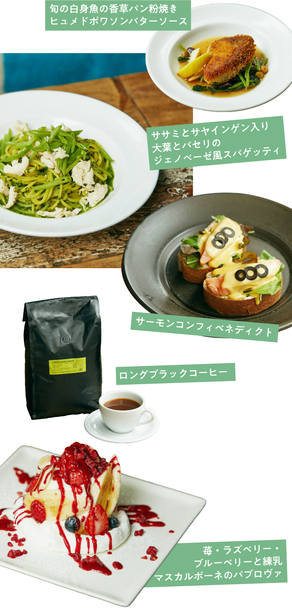

「最初に訪れた時は衝撃を受けましたね（笑）」。
そう快活に笑うのは、サーファー歴20年以上を誇るBONDI CAFEのオーナー、井谷稔さん。同店のアイデアを得た当時の出来事をこう振り返る。
2022.06.09
都市にいながら海を感じさせるとして、今なお多くの人たちから愛されるBONDI CAFE。オーストラリアのボンダイビーチから着想を得たスタイルは実に開放的で、その心地よさはリピーターの多さから推して知るべしでしょう。そんな同店が、LG Stylerを導入したのは今年の春先。そこには、パンデミックを乗り越え感じた、ひとつの気づきが根本にあるようです。
「20年ほど前にシドニーへ行き、現地のサーフショップで近くにサーフスポットがないかを聞いたんです。なら、ここからバスで30分ぐらいのところに良い場所がある、と教えてもらったのがボンダイビーチ。確かに素敵なビーチだったのですが、驚いたのは周辺の環境。ビーチから一歩離れれば雰囲気の良いお店が軒を連ねたモダンな街並みが広がります。まるで代官山とビーチがミックスされたような姿に驚きましたね」。
現地の空気感を活かしたカフェをやりたいと考え、BONDI CAFÉをオープンしたのはそれから７年後のこと。場所は広尾である。

「目指したのは、ビーチへピクニックに訪れるような感覚。なので、よりのんびり、まったりしてほしいと通常のカフェよりもソファー席を多く設置しました。店内とテラスに一体感を持ってもらうべく、双方の間に無駄な仕切りや段差も取り除いています。メニューは、現地のテイストを取り入れつつも、使用する素材はほぼ国内の契約農家のもの。パンも朝一番で焼いた自家製を使用しています」。

居心地の良さをさらに後押しするのがLG Stylerと井谷さん。導入について次のように語る。
「ほとんどの人が上着を脱いでリラックスした状態で食事を楽しみますよね。その間、脱いだ衣服が帰る頃にはクリーンな状態になり、ふんわりとした着用間を感じながら帰路につく。それってめちゃくちゃ嬉しいだろうなって思ったんですよ。やはりパンデミックを経て、皆さん外食の必要性を再認識するとともに安全に楽しむにはどうするかを考えるようになりましたよね。
そんな中、飲食店として清潔感をキープしながら、お客様に少しでも安心を届けられるのであれば、いっそうお客様は楽しむ方に集中できる。きっとそれが、居心地の良さをより感じてもらえる要因になると思ったんです」。
皆さんの舌を楽しませ、胃袋を満たすだけが飲食店ではありません。少しでもリラックスし、楽しんでもらう。言うなれば心のフォローもまた我々の役割だと思います。その面では、LG Stylerが担う役割は決して小さくないと感じますね」。
「まずスタッフがみんな大喜びでした。みんな『家に欲しい！』って言っています（笑）。真っ先に使った他のスタッフにすごくいいよって勧められて私も私服のジャケットで試してみたのですが、感覚的にはクリーニングに出した後の感動に近いです。匂いも取れるし、ふっくらした感じになるし。冬にきていたダウンジャケットも入れてみたのですが、ボリューム感が復活して暖かさが蘇った気がしました」
「私は仕事で使っているエプロンを入れてみました。洗い物した後に濡れてしまうので、それを乾燥させたかったのと、もちろん除菌も兼ねて。見た目には分かりづらいかもしれませんが、清潔感をキープできているという実感があって心地よかったです。私物のフリースジャケットも入れてみましたが、毛が柔らかくなってふっくら戻った気がします。お客さまにもとても評判で、仕上がったばかりの上着に袖を通して喜ばれる方がたくさんいらっしゃいました」

BONDI CAFE
東京都港区南麻布5-15-9 バルビゾン70 1F
03-5422-9449
9:00 ~ 23:00 (LO22:00) 不定休
Interview & Text: Ryo Kikuch
Photo: Kanta Matsubayashi
Video: Glis Production